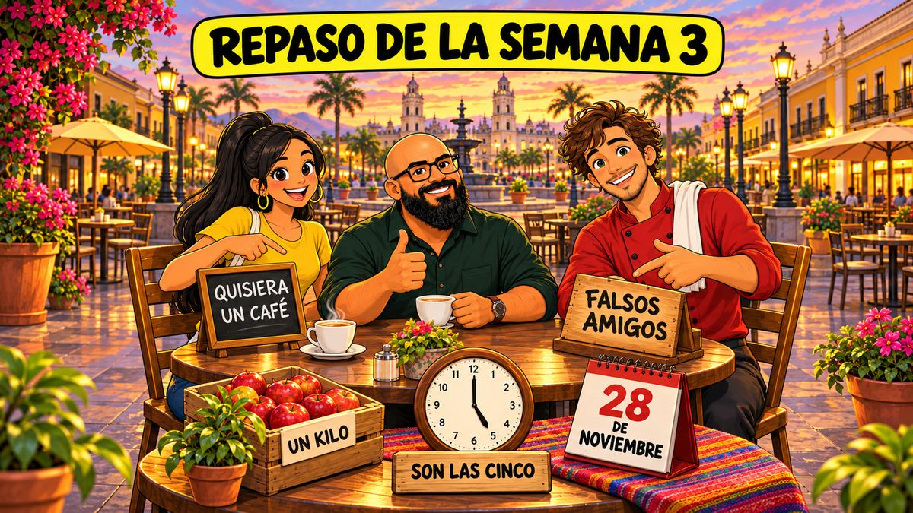

‹ Calendário

ED. 18 · REVISÃO
Repaso de la semana 3
Revisão da semana
…
Publicação
sábado, 28/11/2026, 12h
Semana
Semana 3 de 24
Temporada
T2 Pela cidade · Nível 1 (A1)
Guia detalhado
Guia de apoio da edição
Ler no LinkedIn
O link aparece depois que a edição for publicada e conferida
‹ Ed. 17
Domingo ›